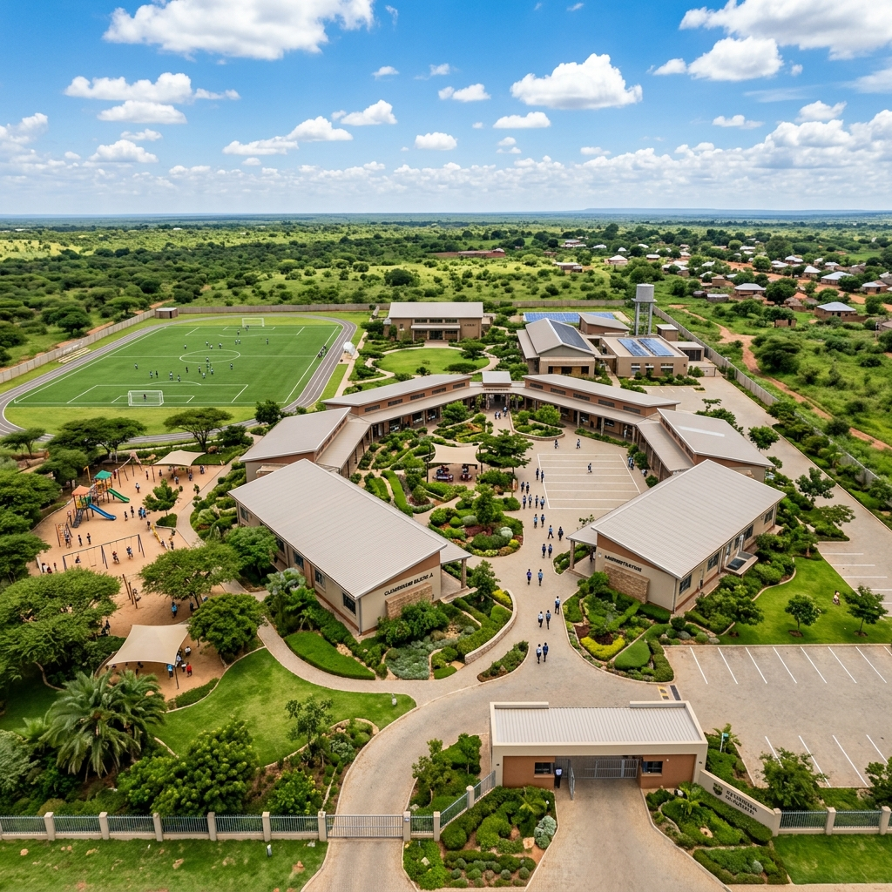
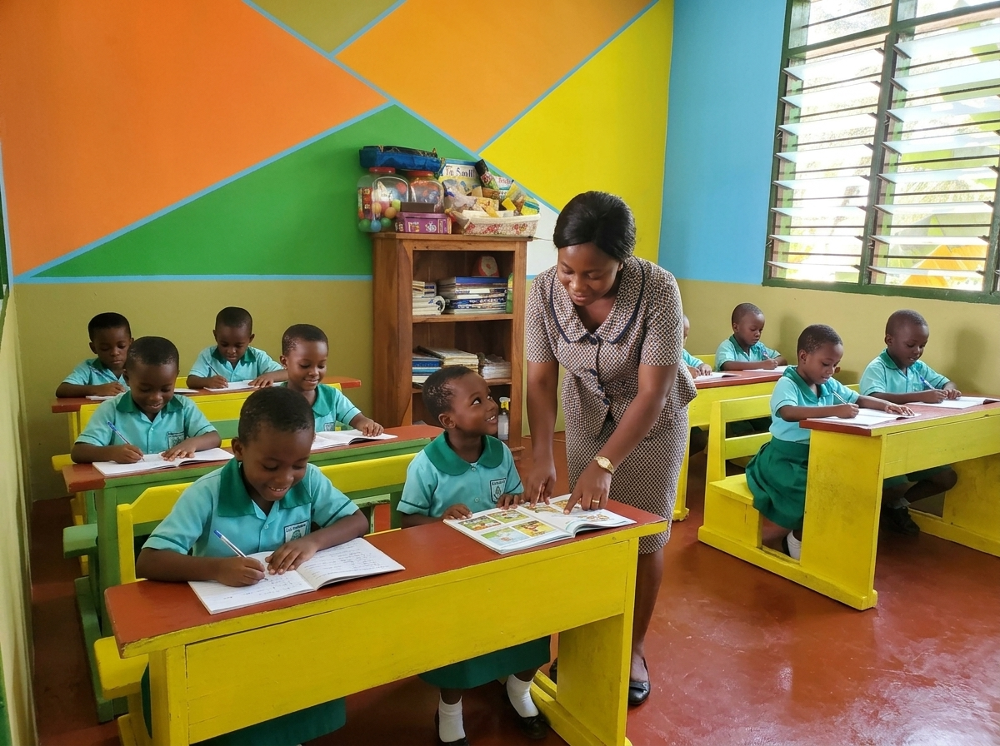
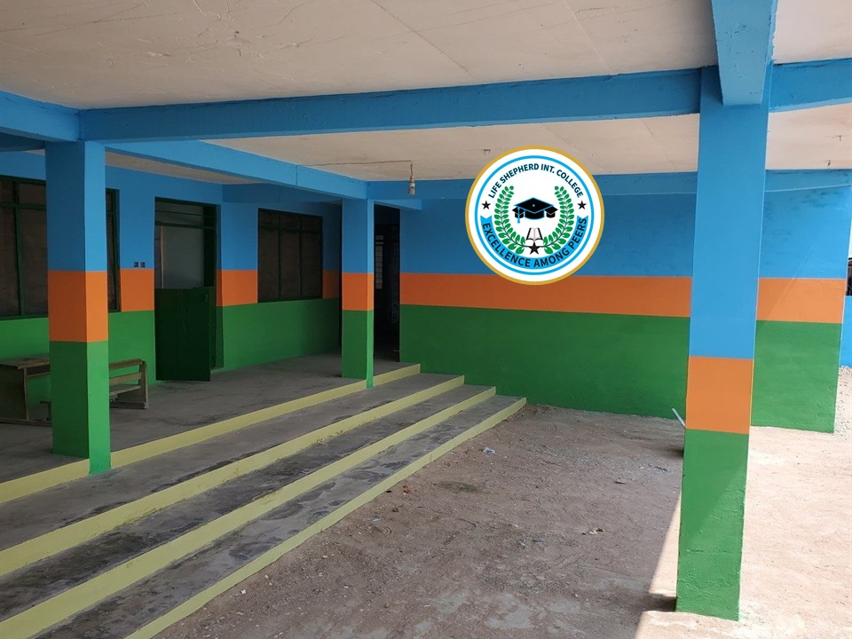
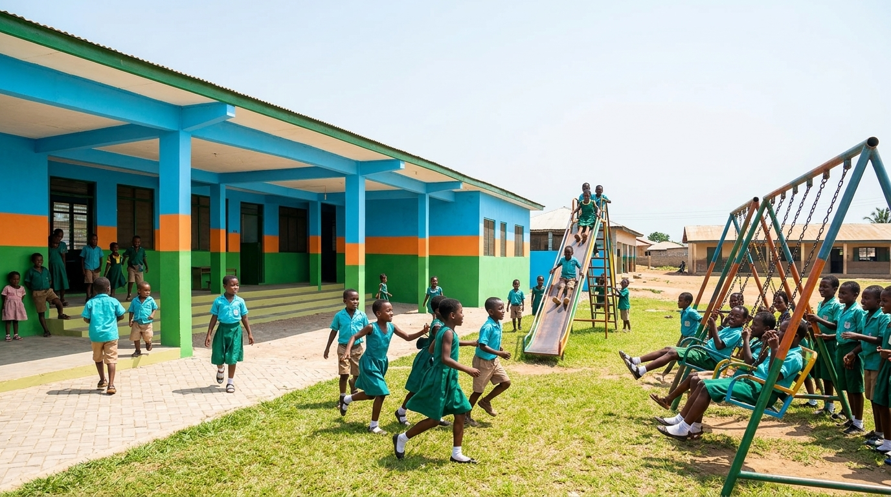
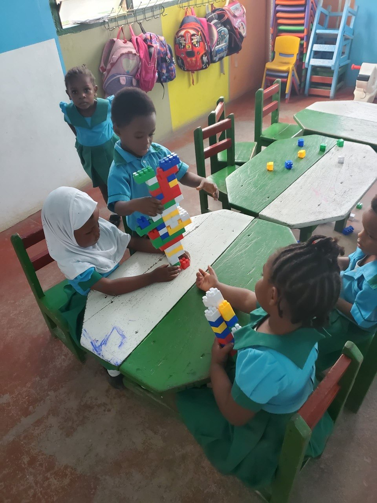
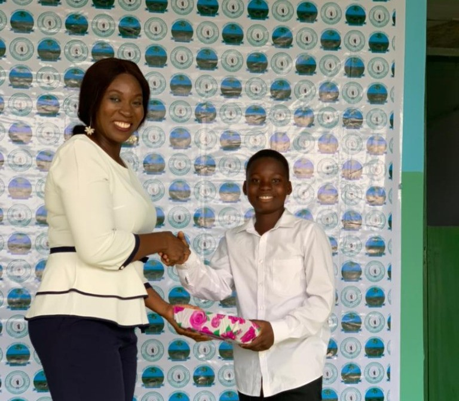

Our Mission
To provide quality, holistic education that nurtures academic excellence, spiritual growth, moral values, and practical life skills — preparing every child for a purposeful future while fostering love, integrity, and a heart of service.
Our Vision
To be a leading educational institution recognized for raising well-rounded, God-fearing, and academically excellent children who positively impact their communities and the world at large.
Our Story
Founded with a passion for nurturing young lives, Life Shepherd International College has grown from humble beginnings into a trusted institution that parents rely on for their children's foundational education. Our name reflects our commitment — to be life shepherds, guiding every child with care and purpose.

Our Core Values
Excellence
We pursue the highest standards in teaching, learning, and character formation, believing every child can achieve greatness.
Faith & Integrity
Grounded in Christian values, we promote honesty, godliness, and transparency in all aspects of school life.
Love & Compassion
Every child is embraced with unconditional love, creating a nurturing environment where they feel safe to learn and grow.
Innovation
We embrace creative teaching methods, modern learning tools, and innovative approaches to make education engaging and effective.
Our Facilities

Modern Classrooms
Spacious, well-ventilated classrooms equipped with learning aids and comfortable furniture for effective learning.

Modern Campus Infrastructure
A serene, architecturally modern campus environment designed to provide a safe, inspiring, and conducive atmosphere for holistic education.

Nursery & Creche Center
Dedicated, child-friendly learning spaces equipped with age-appropriate educational resources to nurture pupils in their early developmental years.

Playground & Sports Grounds
A spacious, secure outdoor playground equipped with recreational swings, slides, and grassy open spaces where pupils enjoy active play and physical development.
Student Life
Life at LSIC is vibrant, enriching, and filled with memorable experiences

Extracurricular Activities
From sports to arts and cultural performances, our pupils engage in diverse activities that develop well-rounded individuals.

Interactive Learning
Collaborative group activities and hands-on projects foster teamwork, communication, and critical thinking skills.

Graduation & Awards Ceremony
Celebrating academic distinction, character excellence, and pupil achievements at our annual Speech, Prize-Giving & Graduation ceremonies.